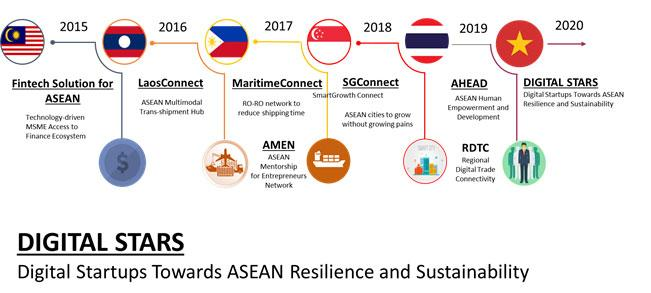

Diễn biến phức tạp của đại dịch COVID-19 trong quý 1 năm 2020 đã gây ảnh hưởng nặng nề đến sự phát triển kinh tế của Việt Nam và các nước trong khu vực, cũng như ảnh hưởng nghiêm trọng đến hoạt động kinh doanh của doanh nghiệp khi thị trường tiêu thụ bị thu hẹp, thiếu nguồn cung nguyên liệu, thiếu nhân công cũng như vốn và dòng tiền trong sản xuất kinh doanh, đặc biệt là với những doanh nghiệp MSMEs - những đơn vị chịu ảnh hưởng trực tiếp và rõ ràng nhất.
Tuy nhiên, ở một góc độ khác, đại dịch COVID-19 cũng là cơ hội để doanh nghiệp nhìn nhận và đánh giá lại phương thức kinh doanh cũ, ứng dụng công nghệ số và mạng Internet nhằm chuyển đổi mô hình kinh doanh, tối ưu hóa nhân công và chi phí, mở rộng tiếp cận thị trường, giúp người lao động có thể làm việc từ xa, qua đó vượt qua giai đoạn khó khăn hậu COVID-19, tiếp tục duy trì và phát triển, đảm bảo an sinh xã hội.
Đây là chương trình tìm kiếm, tôn vinh và công bố các giải pháp chuyển đổi số hướng tới hỗ trợ doanh nghiệp MSMEs tại Việt Nam ứng phó với đại dịch COVID, tiếp tục các hoạt động sản xuất, kinh doanh mà vẫn đảm bảo phòng chống dịch bệnh COVID-19, trong bối cảnh VCCI được Chính phủ giao nhiệm vụ chủ trì các hoạt động doanh nghiệp trong năm Việt Nam chủ tịch ASEAN 2020.
- Được ghi nhận vào Danh bạ các giải pháp tiềm năng về chuyển đối số trong việc giúp thuận lợi hóa và thúc đẩy sản xuất, kinh doanh trong bối cảnh đại dịch COVID-19, đại diện cho Việt Nam.
- Cơ hội quảng bá rộng rãi sản phẩm dịch vụ của mình tới các doanh nghiệp MSMEs trong ASEAN thông qua Cổng thông tin Mạng lưới khởi nghiệp công nghệ số ASEAN, một cấu phần của dự án Digital STARS.
- Khẳng định vị thế, uy tín của doanh nghiệp Việt Nam và tăng cường hội nhập khu vực, mở rộng kết nối tới các nhà đầu tư, đối tác hợp tác thông qua mạng lưới doanh nghiệp rộng lớn của các thành viên ASEAN BAC trong khu vực.
- 10 doanh nghiệp khởi nghiệp sáng tạo sẽ được giới thiệu giải pháp của mình tại Diễn đàn khởi nghiệp ASEAN được tổ chức vào ngày 16 tháng 10 năm 2020 tại Hà Nội, được nhận chứng nhận của Phòng Thương mại và Công nghiệp Việt Nam.
- Có cơ hội giao lưu, trao đổi kinh nghiệm, mô hình kinh doanh từ các doanh nghiệp lớn, doanh nghiệp khởi nghiệp sáng tạo đồng hành tại Diễn đàn để tiếp tục hoàn thiện sản phẩm của mình.
- Doanh nghiệp sẽ được quảng bá thương hiệu, hình ảnh, sản phẩm dịch vụ thông qua các hoạt động truyền thông của Chương trình Digital STARS Showcase 2020.
Các doanh nghiệp, tổ chức hoạt động tại Việt Nam, cung cấp:
- Các giải pháp về chuyển đổi số đã đưa ra thị trường Việt Nam.
- Sản phẩm/dịch vụ có tính hữu dụng cao, có tính đổi mới và sáng tạo, và tiềm năng tăng trưởng, ưu tiên các sản phẩm có khả năng mở rộng thị trường sang các nước ASEAN và quốc tế.
- Ưu tiên các giải pháp ứng dụng công nghệ trong phòng chống dịch COVID-19 như: Quản trị doanh nghiệp, Quản lý nhân lực & tuyển dụng, Tài chính & kế toán, Tiếp thị, bán hàng và chăm sóc khách hàng, Kho vận và hậu cần, Giao tiếp - Đào tạo từ xa, Y tế & sức khỏe…
- Ưu tiên các giải pháp đã từng đạt các giải thưởng trong và ngoài nước.
Ban cố vấn của Chương trình là các chuyên gia về chuyển đổi số, khởi nghiệp đổi mới sáng tạo sẽ lựa chọn và vinh danh top 10 giải pháp chuyển đổi số của nhóm doanh nghiệp khởi nghiệp sáng tạo và công bố Danh bạ trực tuyến các giải pháp chuyển đổi số Việt Nam – Digital STARS Showcase tại Diễn đàn khởi nghiệp ASEAN vào ngày 16 tháng 10/2020 tại Hà Nội với sự tham gia và chứng kiến của cộng đồng doanh nghiệp trong và ngoài nước.
- Doanh nghiệp đăng ký tham dự HOÀN TOÀN MIỄN PHÍ tại Cổng thông tin Mạng lưới khởi nghiệp công nghệ số ASEAN (www.digital-stars.vn).
- Các doanh nghiệp không bị giới hạn việc việc đăng ký số lượng giải pháp, Ban tổ chức sẽ lựa chọn các giải pháp tiềm năng để đưa vào Danh bạ trực tuyến các giải pháp chuyển đổi số tại Việt Nam – Digital STARS Showcase 2020 dựa trên đánh giá hồ sơ.
- Top 10 doanh nghiệp cung cấp giải pháp chuyển đổi số thuộc nhóm khởi nghiệp đổi mới sáng tạo sẽ được lựa chọn đánh giá bởi Ban cố vấn của Chương trình và sẽ giới thiệu sản phẩm/dịch vụ của mình tại Diễn đàn khởi nghiệp ASEAN về công nghệ số, tháng 10/2020. Hạn chót nộp đơn đăng ký là ngày 25/09/2020.
Hội đồng tư vấn kinh doanh ASEAN (ASEAN BAC), là tổ chức đại diện cho tiếng nói của doanh nghiệp khuyến nghị lên Lãnh đạo các nước ASEAN nhằm hướng tới xây dựng môi trường kinh doanh hấp dẫn và minh bạch hơn trong khu vực.
ASEAN BAC được Lãnh đạo ASEAN thành lập từ năm 2001 với sự tham gia của các doanh nghiệp lớn và có sức ảnh hưởng của ASEAN. Hằng năm, ASEAN BAC tổ chức nhiều hội nghị, hội thảo, đối thoại, diễn đàn quốc tế, hội nghị thượng đỉnh nhằm cung cấp phản hồi của doanh nghiệp với quan chức chính phủ, và báo cáo trực tiếp lên Lãnh đạo ASEAN tại Hội nghị Cấp cao ASEAN.
Hiện nay, Phó Chủ tịch Phòng Thương mại và Công nghiệp Việt Nam, Tiến sỹ Đoàn Duy Khương là chủ tịch của ASEAN BAC Việt Nam, đồng thời là Chủ tịch ASEAN BAC 2020, cùng với Bà Nguyễn Thị Nga, Chủ tịch tập đoàn BRG và ông Phạm Đình Đoàn, Chủ tịch tập đoàn Phú Thái là thành viên của ASEAN BAC Việt Nam.
Dự án di sản của ASEAN BAC là một trong những hoạt động thường niên quan trọng của Hội đồng, được triển khai bởi ASEAN BAC nước Chủ tịch ASEAN, khởi đầu từ năm 2015 với dự án Giải pháp Fintech ASEAN (AFIS) của ASEAN BAC Malaysia, Trung tâm vận chuyển hàng đa phương thức (Laos Connect) của ASEAN BAC Lào; Mạng lưới cố vấn khởi nghiệp ASEAN (AMEN) của ASEAN BAC Philiipines, dự án về Thành phố thông minh (SG Connect) của ASEAN BAC Singapore năm 2018, dự án Phát triển nguồn nhân lực 4.0 (AHEAD) và Kết nối thương mại/thanh toán kỹ thuật số trong khu vực do ASEAN BAC Thái Lan chủ trì từ năm 2019.

Với chủ đề năm 2020 là “ASEAN số vì sự phát triển bền vững” nhấn mạnh đến sự phát triển của kinh tế số trong khu vực gắn kết với phát triển xã hội: bền vững và bao trùm, ASEAN BAC Việt Nam, VCCI, phối hợp cùng với Tập đoàn bưu chính Viễn thông Việt Nam (VNPT) triển khai dự án di sản Mạng lưới khởi nghiệp ASEAN công nghệ số - Digital STARS 2020, nhằm tạo dựng một mạng lưới kết nối các doanh nghiệp khởi nghiệp công nghệ trong khu vực, đẩy mạnh giao lưu, học tập kinh nghiệm về khởi nghiệp đổi mới sáng tạo, đồng thời thúc đẩy quá trình chuyển đổi số, đặc biệt với các doanh nghiệp nhỏ và siêu nhỏ - MSME, động lực phát triển kinh tế trong ASEAN.
Tập trung triển khai tại Việt Nam vào năm 2020 khi Việt Nam là Chủ tịch ASEAN, dự kiến Dự án di sản của ASEAN BAC Việt Nam - Digital STARS sẽ được các nước ASEAN hỗ trợ tiếp tục triển khai tại các nước trong khu vực vào các nhiệm kỳ Chủ tịch sau đó.
Ban tổ chức Digital STARS Showcase 2020
Ban Quan hệ quốc tế, Phòng Thương mại và Công nghiệp Việt Nam (VCCI)